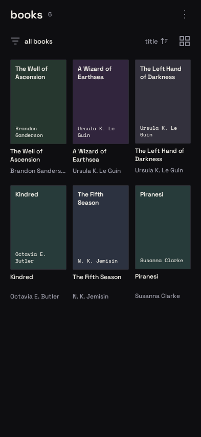
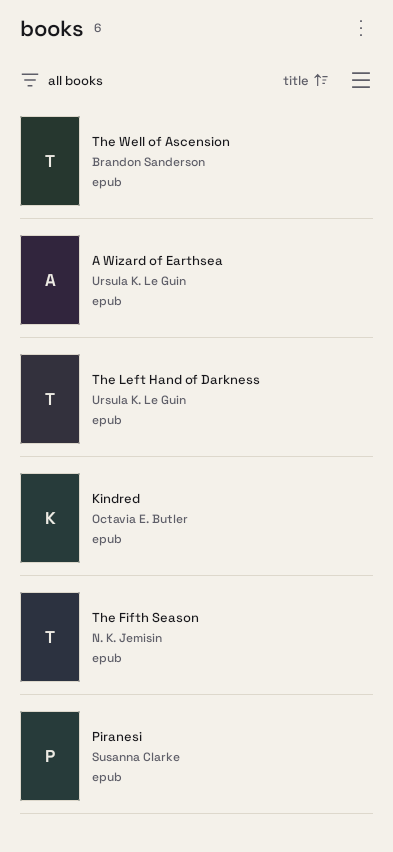
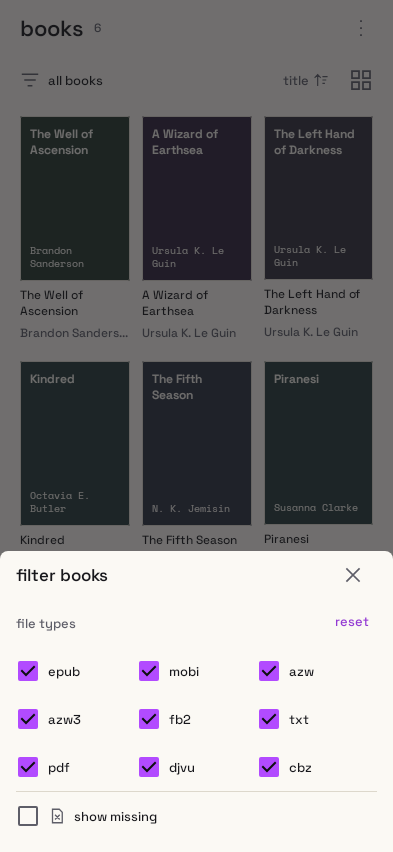
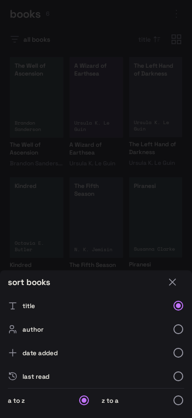
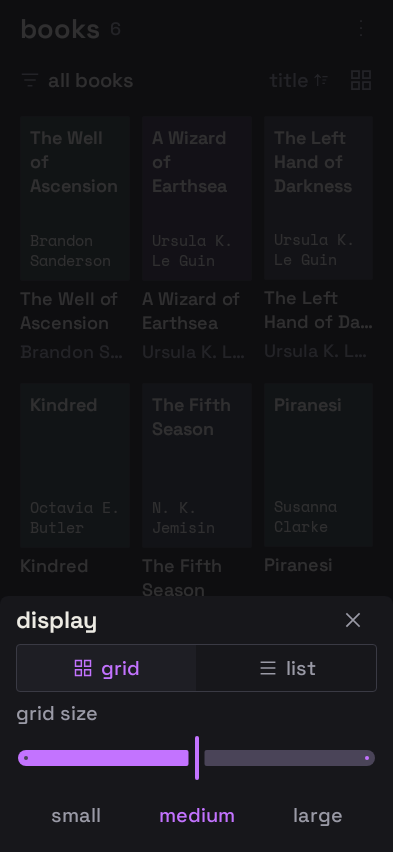
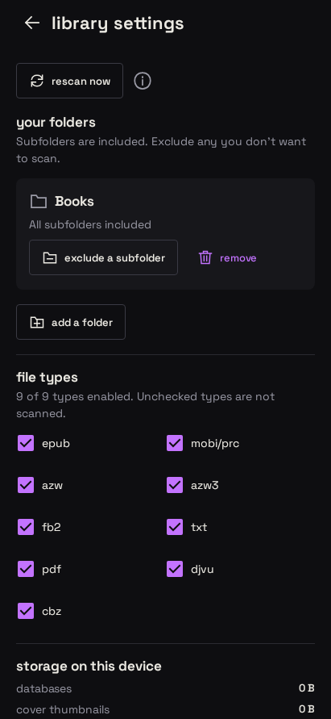
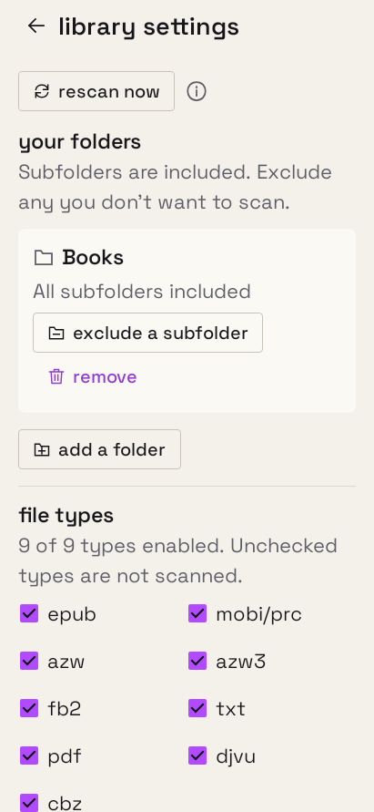
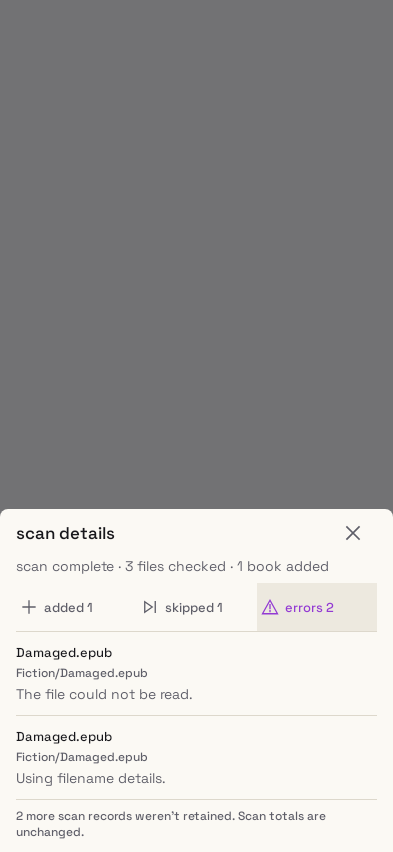

M1 · 0.1.1 interaction revision
Rendered Compose screens after the Samsung S25 FE review. These replace the M1 library sketches in the earlier preview. The flat toolbar opens compact checkbox, radio and display controls. Scan outcomes and errors use timed bottom notices; named results have their own popup. Folder actions are visible and grid/list sizes are remembered separately.

books · ink grid

books · paper list

filters

sort

display · 150% font scale

library settings

settings · paper, 150% system font scale

scan details
The reader remains M2. Last-read order does not manufacture reading history. Android system chrome and native folder pickers are checked on the device.
full visual reference